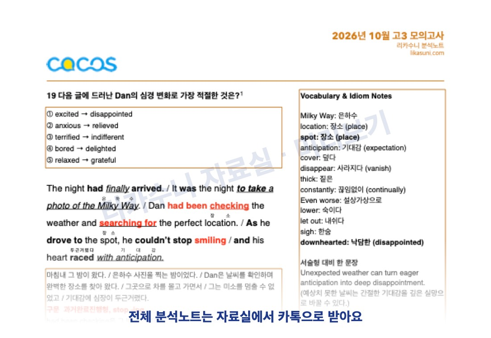

안녕하세요, 이매동 코코스학원 리카수니 원장입니다.
학생 요청으로 2026년 10월 고3 영어 모의고사 19번 분석노트를 만들었어요.
시험지를 옆에 펴 놓고 보시면 더 잘 보여요.
· 시험: 2026년 10월 고3 전국연합학력평가 영어
· 번호: 19번 (Dan 의 심경 변화)
· 정답: ① excited → disappointed (신난 → 실망한)
Dan 은 은하수 사진을 찍으려고 날씨를 확인하고 완벽한 장소까지 찾아 두었어요.
설레는 마음으로 도착했지만 먹구름이 하늘을 덮고 비까지 내려, 결국 낙담한 채 집으로 돌아가는 이야기예요.
· 전반: couldn't stop smiling, his heart raced with anticipation → 기대와 설렘 (excited)
· 전환: However, when he arrived, dark clouds began to cover the sky.
· 후반: lowered his head, letting out a loud sigh, downhearted → 실망 (disappointed)
→ 설렘에서 실망으로 바뀌니 ①이 정답이에요.
② anxious → relieved → 불안에서 안도로 가는 흐름이라 이 글과 반대 방향이에요.
③ terrified → indifferent → 겁에 질린 장면도, 무관심한 장면도 없어요.
④ bored → delighted → 처음부터 들떠 있었고, 끝은 기쁨이 아니라 낙담이에요.
⑤ relaxed → grateful → 감사할 일이 생기지 않았어요.
심경 문제는 However 앞뒤 형용사·행동(웃음, 한숨)을 한 단어로 바꿔 보세요.

1) 과거완료진행형 had been -ing
→ Dan had been checking the weather (그 밤 전부터 계속 확인해 왔다)
2) can't stop -ing: 계속 ~하다
→ he couldn't stop smiling (미소를 멈출 수 없었다)
3) 동시 동작 분사구문
→ waited for over an hour, checking his weather app constantly
4) do nothing but + 동사원형: ~할 수밖에 없다
→ He could do nothing but drive back home
5) wait for + 대상 / wait + for + 기간 구별
→ wait for the clouds to clear (구름이 걷히기를 기다리다) / waited for over an hour (한 시간 넘게 기다렸다)
· Milky Way 은하수
· location, spot 장소
· anticipation 기대감
· cover 덮다
· disappear 사라지다
· thick 짙은
· constantly 끊임없이
· even worse 설상가상으로
· lower 숙이다
· let out a sigh 한숨을 내쉬다
· downhearted 낙담한
분석노트 PDF 에 '서술형 대비 한 문장'(turn A into B)과 영어 핵심 요약(Core Summary)을 해석과 함께 정리해 두었어요.
자료실에서 이 문항 분석노트를 전자책으로 바로 볼 수 있어요.
인쇄용 PDF 는 카카오 로그인 후 카톡으로 받을 수 있고, 같은 회차 다른 번호도 요청할 수 있어요.
▶ 2026년 10월 고3 영어 자료 보기
https://data.likasuni.com/moe/go3/2026-10/eng/
분당 이매동 코코스학원은 초등·중등·고등 영어와 수학을 가르쳐요.
모의고사·수능특강·내신 대비가 궁금하시면 편하게 문의해 주세요.
· 홈페이지: https://www.cocosedu.co.kr/
· 주소: 경기 성남시 분당구 판교로 476 2층